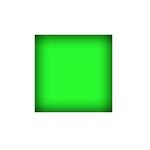
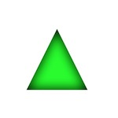
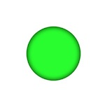

CGContext には setShadow(offset:blur:color:) があるのでドロップシャドウを付けることは簡単にできますが、インナーシャドウがそのまま実現できるAPIはなそうです。
Inner Shadow
こちらのインナーシャドウの実装の説明が記載されています。
とても理解しやすかったです。これを Swift 用に CGContext の Extension として用意した。
extension CGContext {
func innserShadow(path: CGPath, color: UIColor, offset: CGSize, blur: CGFloat) {
saveGState()
addPath(path)
clip()
let opaque = color.withAlphaComponent(1)
beginTransparencyLayer(auxiliaryInfo: nil)
setShadow(offset: offset, blur: blur, color: color.cgColor)
setBlendMode(CGBlendMode.sourceOut)
setFillColor(opaque.cgColor)
addPath(path)
fillPath()
endTransparencyLayer()
restoreGState()
}
}
使い方
四角形
let square = CGRect(x: rect.midX / 2, y: rect.midY / 2, width: rect.midX, height: rect.midY)
context.setFillColor(UIColor.green.cgColor)
context.addRect(square)
let path = context.path!
context.fillPath()
context.innserShadow(path: path, color: UIColor.black, offset: CGSize.zero, blur: 20)

三角形
var path = CGMutablePath()
path.move(to: CGPoint(x: rect.midX / 2, y: rect.height - rect.midY / 2))
path.addLine(to: CGPoint(x: rect.midX, y: rect.midY / 2))
path.addLine(to: CGPoint(x: rect.width - rect.midX / 2, y: rect.height - rect.midY / 2))
path.addLine(to: CGPoint(x: rect.midX / 2, y: rect.height - rect.midY / 2))
context.setFillColor(UIColor.green.cgColor)
context.addPath(path)
context.fillPath()
context.innserShadow(path: path, color: UIColor.black, offset: CGSize.zero, blur: 20)

円
var path = CGMutablePath()
path.addArc(center: c, radius: r, startAngle: 0, endAngle: CGFloat.pi*2, clockwise: true)
context.addPath(path)
context.setFillColor(UIColor.green.cgColor)
context.fillPath()
context.innserShadow(path: path, color: UIColor.black, offset: CGSize.zero, blur: 10)
